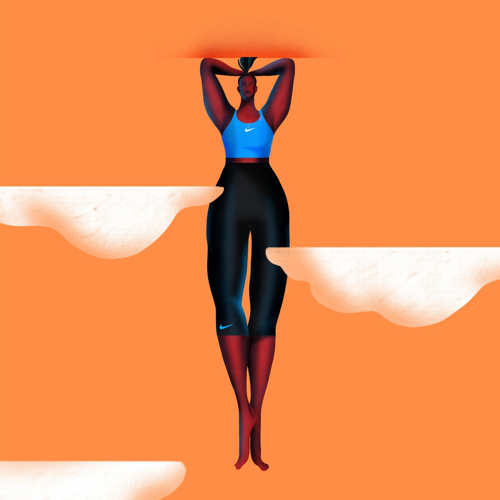
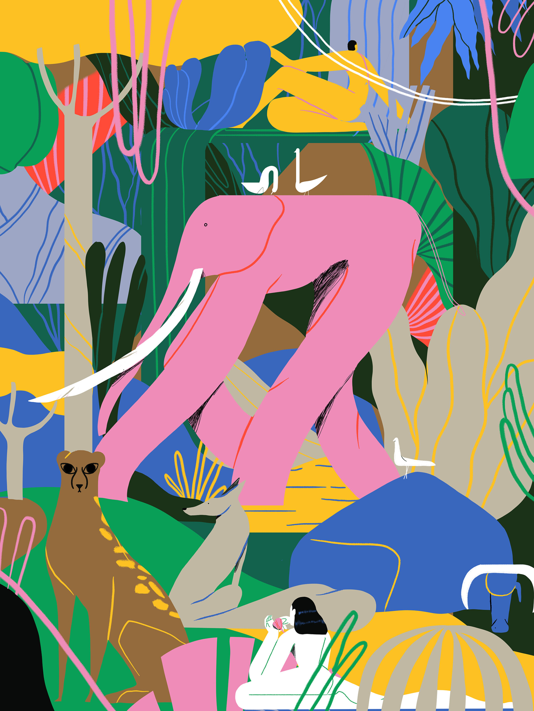
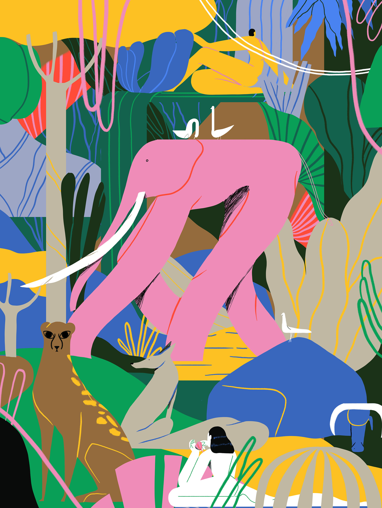

The portfolio of LA-based illustrator Xoana Herrera is an
explosion of sumptuous, stylish character scenes dwelling
in a world that, frankly, looks ideal. Xoana trained as a
graphic designer in Argentina but over time found herself
drawn to the world of illustration after a five-year stint at
Buck agency.
Now, alongside founding a feminist creative collective, Get
it Girl, she creates graceful, complex and accessible
imagery which would be as at home in an ad campaign as
it would be in a children’s book (which she's quite keen
to try soon). “As an artist I think it is up to us to keep evolving
and taking creative decisions,” she says. “Aiming to be
innovative is something I feel I can dare to try every time I
take a job, and that’s amazing.”


 
